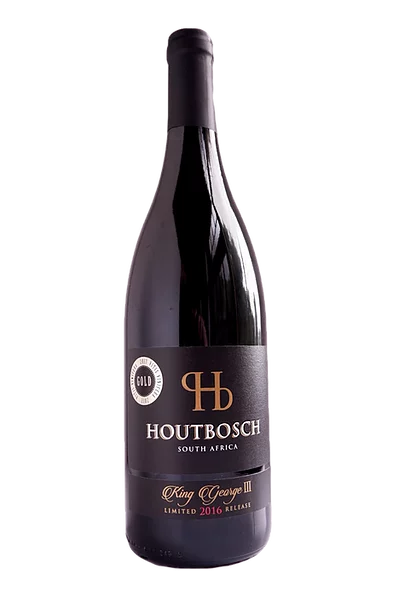
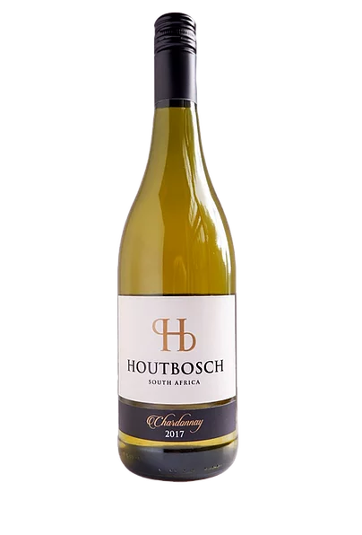

-

In The Glass
Soft smooth flavours of cherries, rooibos and a savoury earthiness. Silky, smooth tannins with an elegant, complex finish.
-

In The Glass
A full-bodied dry red with aromatic berry fruit and judicious oak maturation.
-

In The Glass
Well-rounded full flavors of lime, grapefruit and a creamy butterscotch, with a lingering and complex aftertaste and a well-integrated acidity.